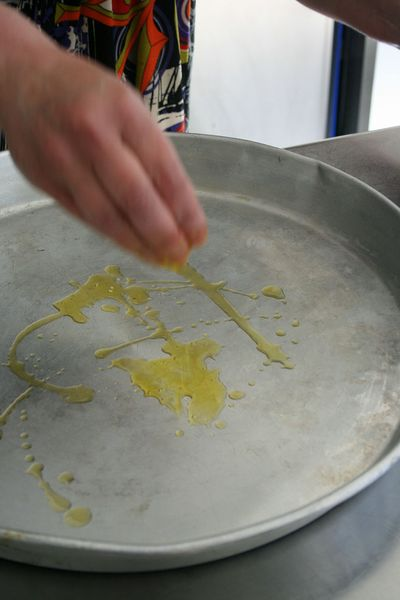
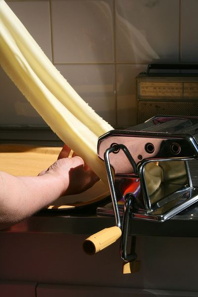
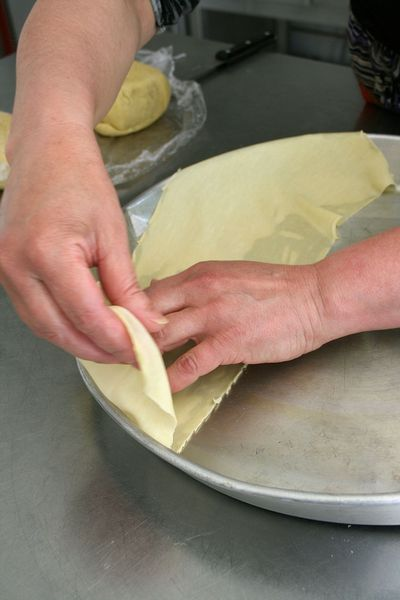
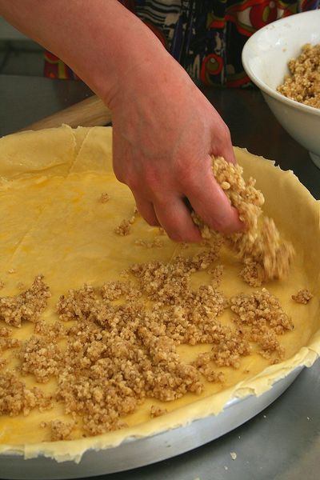
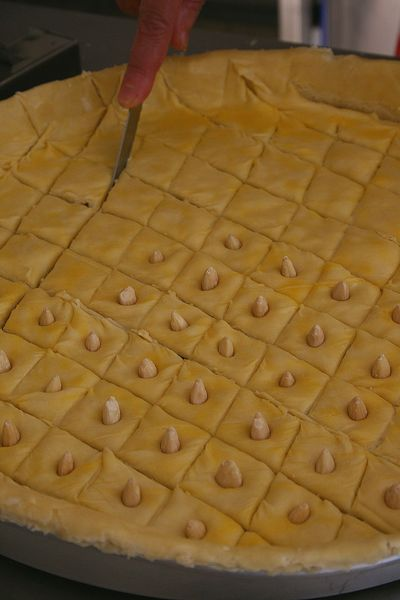
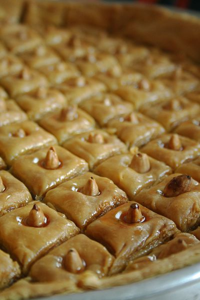

recette
Ma recette
- Mélanger les ingrédients de la pâte dans l'ordre. Sabler la farine et le beurre puis arroser d'eau petit à petit pour ramasser la pâte.
Elle doit être souple et se former en boule lisse.
- Filmer pour qu'elle ne sèche pas. Laisser reposer le temps de préparer la farce et de nettoyer le plan de travail.
Diviser la pâte en 13 boules identiques. Filmer à nouveau.
- Prendre une boule de pâte, l'étaler un peu avec de la fécule de maïs puis la passer au laminoir au numéro 3, 5 puis 7, soit 3 fois.
L'étirer pour qu'elle soit encore plus fine
- 
- Disposer la bande de pâte sur le plateau beurré et continuer ainsi avec les autres boulettes de pâte en couvrant tout le plateau. C'est la première couche.
- 
- 
-
Beurrer cette couche de pâte puis recommencer avec une autre pâte mais au sens inverse cette fois-ci.
Compter 7 couches en tout en pensant à beurrer entre chaque couche de pâte.
Retirer l'excèdent de pâte à l'aide d'un couteau.
- Disposer la farce de manière égale et généreuse.
- 
- Couvrir la farce en procédant de la manière que pour la base, compter 6 couches de pâtes disposées inversement.
- Retirer l'éxcèdent de pâte qui dépasse du moule.
- Arroser de beurre fondu.
- Placer un peu au frais avant de découper la pâte en losanges à l'aide d'un couteau.
- Planter au centre de chaque losange une amande entière.
- Faire cuire environ en surveillant la cuisson. Je ne peux pas vous dire le temps car cela dépend du four et de la quantité, compter 1h pour qu'elle soit bien dorée.
- 
- Arroser de miel tiède ou de sirop dès la sortie du four, remettre au four éteint et laisser prendre une nuit.
- Découper les losanges, les retirer et les placer dans des caissette.
- La Baklawa se conserve très bien au frais et peut être congelée.
- 